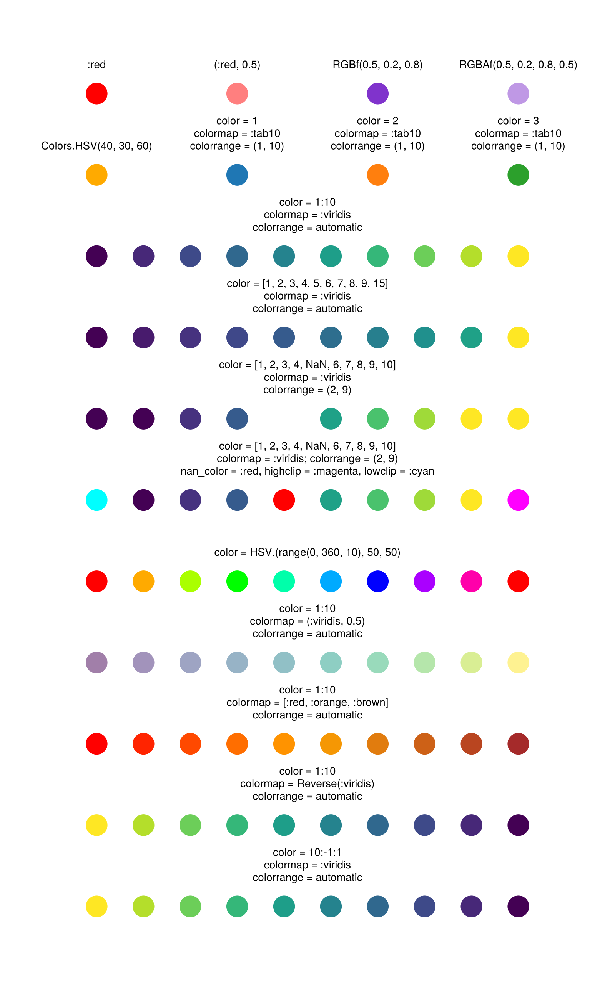

Understanding colormap
Here is a cheat sheet modified from Colors/Cheat sheet of the documentation of Makie:
using Makie
using Makie.Colors
theme = Attributes(
Scatter = (; markersize = 40),
Text = (; align = (:center, :bottom), offset = (0, 30))
)
with_theme(theme) do
f = Figure(size = (800, 1300))
ax = Axis(f[1, 1], xautolimitmargin = (0.2, 0.2), yautolimitmargin = (0.1, 0.1))
hidedecorations!(ax)
hidespines!(ax)
scatter!(ax, 1, 1, color = :red)
text!(ax, 1, 1, text = ":red")
scatter!(ax, 2, 1, color = (:red, 0.5))
text!(ax, 2, 1, text = "(:red, 0.5)")
scatter!(ax, 3, 1, color = RGBf(0.5, 0.2, 0.8))
text!(ax, 3, 1, text = "RGBf(0.5, 0.2, 0.8)")
scatter!(ax, 4, 1, color = RGBAf(0.5, 0.2, 0.8, 0.5))
text!(ax, 4, 1, text = "RGBAf(0.5, 0.2, 0.8, 0.5)")
scatter!(ax, 1, 0, color = Colors.HSV(40, 30, 60))
text!(ax, 1, 0, text = "Colors.HSV(40, 30, 60)")
scatter!(ax, 2, 0, color = 1, colormap = :tab10, colorrange = (1, 10))
text!(ax, 2, 0, text = "color = 1\ncolormap = :tab10\ncolorrange = (1, 10)")
scatter!(ax, 3, 0, color = 2, colormap = :tab10, colorrange = (1, 10))
text!(ax, 3, 0, text = "color = 2\ncolormap = :tab10\ncolorrange = (1, 10)")
scatter!(ax, 4, 0, color = 3, colormap = :tab10, colorrange = (1, 10))
text!(ax, 4, 0, text = "color = 3\ncolormap = :tab10\ncolorrange = (1, 10)")
text!(ax, 2.5, -1, text = "color = 1:10\ncolormap = :viridis\ncolorrange = automatic")
scatter!(ax, range(1, 4, length = 10), fill(-1, 10), color = 1:10, colormap = :viridis)
color_2 = [collect(1:9)..., 15]
text!(ax, 2.5, -2, text = "color = $color_2\ncolormap = :viridis\ncolorrange = automatic")
scatter!(ax, range(1, 4, length = 10), fill(-2, 10), color = color_2, colormap = cgrad(:viridis, 10))
text!(ax, 2.5, -3, text = "color = [1, 2, 3, 4, NaN, 6, 7, 8, 9, 10]\ncolormap = :viridis\ncolorrange = (2, 9)")
scatter!(ax, range(1, 4, length = 10), fill(-3, 10), color = [1, 2, 3, 4, NaN, 6, 7, 8, 9, 10], colormap = :viridis, colorrange = (2, 9))
text!(ax, 2.5, -4, text = "color = [1, 2, 3, 4, NaN, 6, 7, 8, 9, 10]\ncolormap = :viridis; colorrange = (2, 9)\nnan_color = :red, highclip = :magenta, lowclip = :cyan")
scatter!(ax, range(1, 4, length = 10), fill(-4, 10), color = [1, 2, 3, 4, NaN, 6, 7, 8, 9, 10], colormap = :viridis, colorrange = (2, 9), nan_color = :red, highclip = :magenta, lowclip = :cyan)
text!(ax, 2.5, -5, text = "color = HSV.(range(0, 360, 10), 50, 50)")
scatter!(ax, range(1, 4, length = 10), fill(-5, 10), color = HSV.(range(0, 360, 10), 50, 50))
text!(ax, 2.5, -6, text = "color = 1:10\ncolormap = (:viridis, 0.5)\ncolorrange = automatic")
scatter!(ax, range(1, 4, length = 10), fill(-6, 10), color = 1:10, colormap = (:viridis, 0.5))
text!(ax, 2.5, -7, text = "color = 1:10\ncolormap = [:red, :orange, :brown]\ncolorrange = automatic")
scatter!(ax, range(1, 4, length = 10), fill(-7, 10), color = 1:10, colormap = [:red, :orange, :brown])
text!(ax, 2.5, -8, text = "color = 1:10\ncolormap = Reverse(:viridis)\ncolorrange = automatic")
scatter!(ax, range(1, 4, length = 10), fill(-8, 10), color = 1:10, colormap = Reverse(:viridis))
color_rv = reverse(1:10)
text!(ax, 2.5, -9, text = "color = $color_rv\ncolormap = :viridis\ncolorrange = automatic")
scatter!(ax, range(1, 4, length = 10), fill(-9, 10), color = color_rv, colormap = :viridis)
f
end
Makie.cgrad(:viridis, 10)Key points:
- For categorical data, saying some integers, specify
colorrangeto the maximum/minimum of the data to make sure a color on the plot is exactly corresponded to a certain color. - As a out–of-
colorrangedata value has the same color as the nearest one in range, uselowclipandhighclipto highlight the difference.